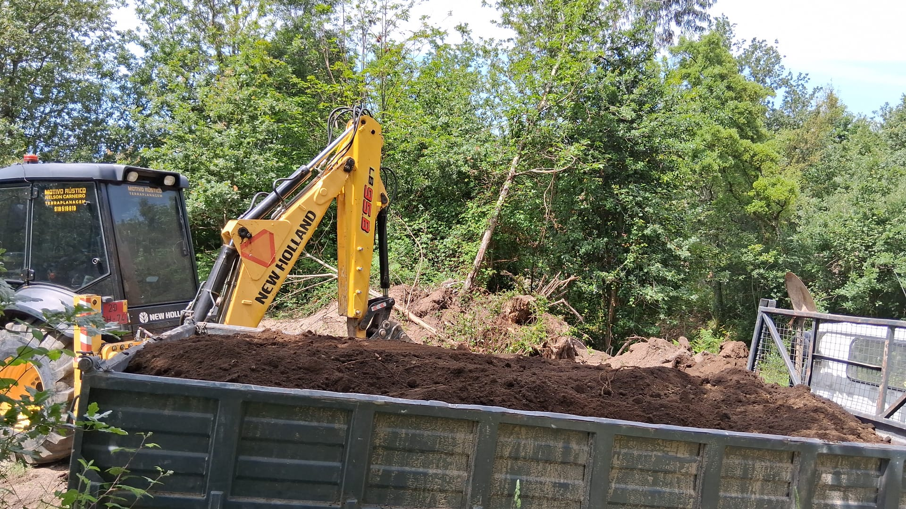
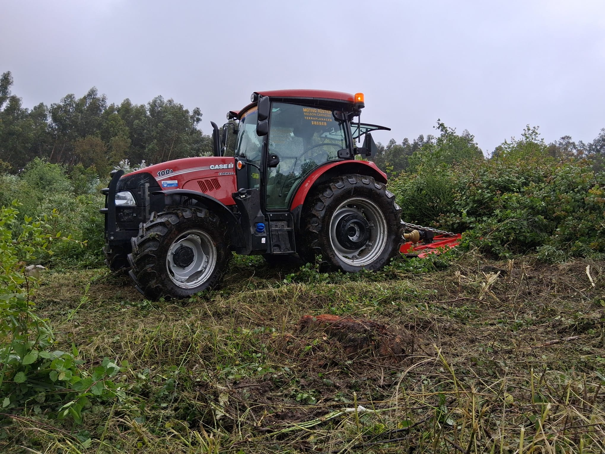
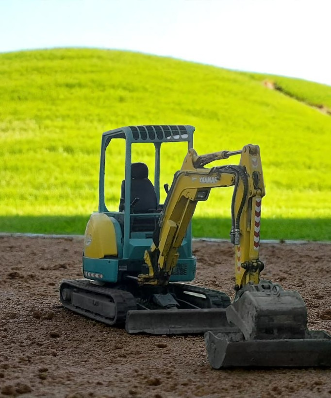

Máquinas de Terraplanagem: Guia Completo para Obras em Guimarães e Arredores
Vai começar uma obra ou precisa de limpar o terreno em Guimarães e arredores? Então este guia é para si. Descubra as principais máquinas de terraplanagem usadas nas nossas obras reais, e como cada uma faz diferença na preparação do solo, nivelamento, limpeza e transporte de terras. Partilhamos dicas, experiências e fotos para ajudar a escolher a melhor solução para o seu projeto — sempre com apoio local.
As principais máquinas de terraplanagem da Motivo Rústico prontas para mais um projeto: trator agrícola, retroescavadora e mini-escavadora, lado a lado ao pôr do sol em Guimarães e arredores.
Retroescavadora: Versatilidade e Eficiência
Legenda: A nossa retroescavadora New Holland em plena ação a carregar terra na limpeza de um terreno em Guimarães e arredores.
A retroescavadora é a estrela das obras de terraplanagem, conhecida pela sua polivalência e robustez. É perfeita para escavações, abertura de valas, remoção de raízes e, claro, para transportar e carregar terra em camiões ou contentores. Com braços ajustáveis e acessórios à medida, adapta-se tanto a obras rurais como urbanas.
Dica de especialista: Uma retroescavadora bem operada acelera o trabalho, reduz custos e garante a segurança no terreno.
Trator Agrícola: Força no Transporte e Apoio
Legenda: Trator agrícola com pá frontal e reboque, essencial no transporte de terras e apoio a outras máquinas em Guimarães e arredores.
O trator agrícola equipado com pá frontal ou reboque é fundamental para movimentar grandes volumes de terra, pedras e restos de vegetação. Ideal para limpezas de terrenos extensos, nivelamentos rápidos e apoio em todo o tipo de obras rurais em Guimarães e arredores. Além disso, garante versatilidade e rendimento, sobretudo quando aliado a uma equipa experiente.
Curiosidade: Muitas quintas da região aproveitam o trator para manter caminhos acessíveis e reforçar muros em pedra após as limpezas.
Mini-Escavadora: Precisão para Espaços Reduzidos
Legenda: Mini-escavadora Yanmar, ideal para jardins, espaços reduzidos e trabalhos de precisão em terrenos rurais de Guimarães e arredores.
A mini-escavadora é indicada para trabalhos de precisão, como escavações junto a muros, limpezas em zonas de difícil acesso ou preparação de pequenos jardins. Compacta e leve, consegue entrar onde outras máquinas não chegam e causa o mínimo de impacto no terreno.
Vantagem: O baixo consumo e fácil transporte tornam esta máquina indispensável para pequenas obras e remodelações em Guimarães e arredores.
Como escolher a máquina ideal para a sua obra?
- Tamanho do projeto: Grandes áreas exigem máquinas robustas; zonas pequenas beneficiam de equipamentos compactos.
- Tipo de solo: Solos argilosos, pedregosos ou com raízes densas precisam de mais potência.
- Acessibilidade: Avalie os acessos antes de escolher — ruas estreitas ou declives exigem soluções adaptadas.
- Tipo de trabalho: Nivelamento, escavação, limpeza, transporte ou remoção de vegetação.
- Profissionalismo da equipa: Equipas locais com experiência garantem rapidez, segurança e acabamentos de qualidade.
Vantagens de contratar empresa local com máquinas próprias
- Resposta rápida e acompanhamento personalizado em Guimarães e arredores;
- Equipamentos adequados a cada situação;
- Redução de custos logísticos;
- Conhecimento dos terrenos da região;
- Maior controlo de prazos e qualidade.
Perguntas Frequentes
-
Preciso de terraplanagem em Guimarães e arredores, por onde começo?O primeiro passo é avaliar o terreno e o tipo de obra. Depois, contacte a Motivo Rústico — analisamos a situação, aconselhamos as máquinas certas e tratamos do serviço do início ao fim em toda a região.
-
Posso pedir apenas limpeza ou abertura de valas?Sim! Fazemos desde pequenas limpezas, remoção de raízes, até abertura de valas para saneamento, rega ou fundações, tanto em Guimarães como nos arredores.
-
A mini-escavadora é suficiente para limpar um quintal?Na maioria dos casos, sim! Se houver árvores de grande porte ou pedras volumosas, pode ser necessário recorrer à retroescavadora. Peça sempre avaliação personalizada para a sua zona.
Fale connosco – peça orçamento grátis!
Tem dúvidas sobre terraplanagem em Guimarães e arredores ou quer um orçamento sem compromisso? A equipa Motivo Rústico responde rápido e acompanha todo o processo. Peça já o seu orçamento.
Também pode gostar: Como preparar o terreno antes de construir → Fale Connosco
Fale Connosco